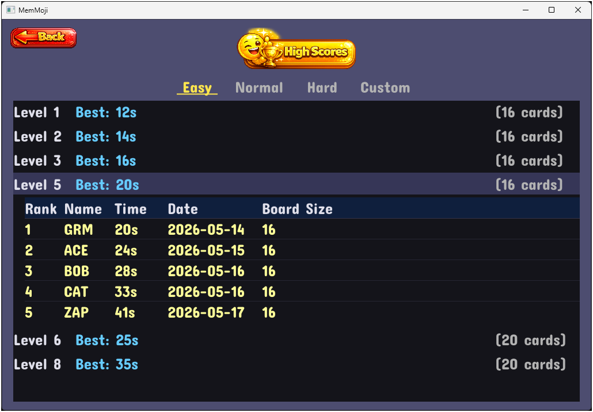

Last Updated: 2026-05-17
Hints & High Scores
Hints
Each level starts with 3 hints. Hints are only available after you've flipped your first card — that is, when you're in the middle of choosing your second card.
The Hint button in the top bar shows when you have hints available (it appears greyed out when no hints can be used — either no card is flipped, or you've used all 3). Click it to reveal the location of the matching card for the card you just flipped. The matching card gets a pulsing gold border to point it out. The hint clears automatically when you click any card.
Using a hint does not affect your score type. If you then click the hinted card and it matches, it still counts as Remembered if you had seen it before, or Guess if you hadn't.
High Scores
When you complete a level faster than your previous best times, you'll see NEW HIGH SCORE! A popup appears asking you to enter your name — up to 3 characters, uppercase, like classic arcade initials.
The game tracks the top 5 times for each level on each difficulty. To view high scores, click the High Scores button that appears next to the Next Level button on the level complete screen. This replaces the board area with a ranked table showing Rank, Name, Time, and Date. Click Cancel to close the table and return to the board view. Times are displayed in seconds when under one minute, or in minutes:seconds format for longer runs.

Top Scores Browser
The Top Scores screen lets you browse all your saved scores in one place. Access it from the title screen by clicking the High Scores button.
The browser is organized with tabs across the top for each difficulty: Easy, Normal, Hard, and Custom. Click a tab to see all recorded levels for that difficulty.
Each level appears as a row. Click a level row to expand it and reveal the top 5 scores for that level, showing Rank, Name, Time, and Date. Click the row again to collapse it.
The Custom tab tracks scores by board configuration, so each unique combination of board size and icon count has its own score history.
Press the Back button or Escape to return to the title screen.
Jump To Level
The Jump To Level control in the Settings panel lets you skip to any level from 1 up to 10 beyond your highest cleared level on the current difficulty. Type a level number directly, or use the orange up/down arrow buttons to adjust the value, then click the green Go button to jump. Since boards are randomized each time, this is mainly useful for jumping ahead to harder boards without replaying earlier levels.